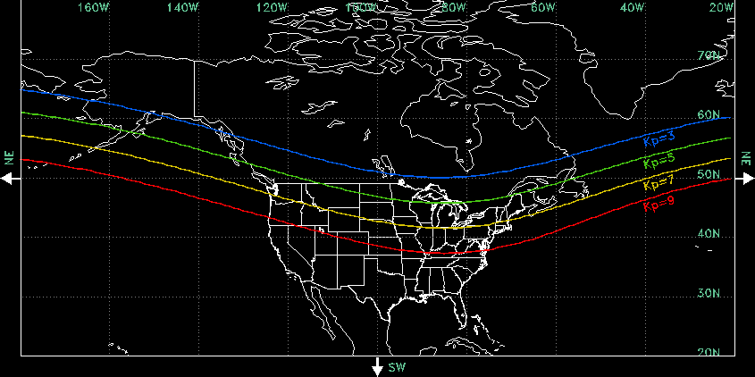

Find
your
light
your
light


Use the maps to find your area's Kp value. For example: My area is between lines 3 and 5 so a Kp value of 4 should produce a visible aurora in my area.
There doesn't apper to be any auroras in the next week for your area.